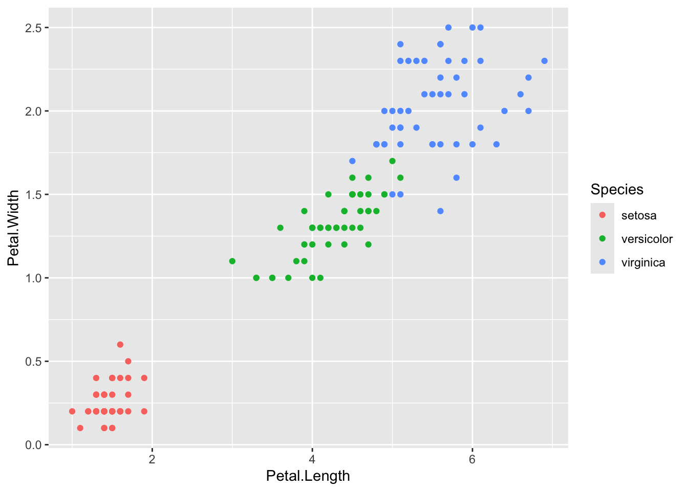

2 + 2[1] 410 / 2[1] 5sqrt(25)[1] 5By the end of this session, you should be able to:
dplyr commands to filter, select, mutate, group, and summarise data.ggplot2.We will use the built-in iris dataset, so no external data files are needed.
R can be used like a calculator.
2 + 2[1] 410 / 2[1] 5sqrt(25)[1] 5We can save values as objects using <-.
x <- 10
x[1] 10x + 5[1] 15A vector is a collection of values.
numbers <- c(1, 2, 3, 4, 5)
numbers[1] 1 2 3 4 5mean(numbers)[1] 3sd(numbers)[1] 1.581139length(numbers)[1] 5Create a vector called ages containing five ages. Then calculate the mean age.
ages <- c(18, 21, 25, 30, 34)
mean(ages)[1] 25.6A data frame is a table. Rows are observations and columns are variables.
We will use the built-in iris dataset.
data(iris)Inspect the dataset.
head(iris) Sepal.Length Sepal.Width Petal.Length Petal.Width Species
1 5.1 3.5 1.4 0.2 setosa
2 4.9 3.0 1.4 0.2 setosa
3 4.7 3.2 1.3 0.2 setosa
4 4.6 3.1 1.5 0.2 setosa
5 5.0 3.6 1.4 0.2 setosa
6 5.4 3.9 1.7 0.4 setosastr(iris)'data.frame': 150 obs. of 5 variables:
$ Sepal.Length: num 5.1 4.9 4.7 4.6 5 5.4 4.6 5 4.4 4.9 ...
$ Sepal.Width : num 3.5 3 3.2 3.1 3.6 3.9 3.4 3.4 2.9 3.1 ...
$ Petal.Length: num 1.4 1.4 1.3 1.5 1.4 1.7 1.4 1.5 1.4 1.5 ...
$ Petal.Width : num 0.2 0.2 0.2 0.2 0.2 0.4 0.3 0.2 0.2 0.1 ...
$ Species : Factor w/ 3 levels "setosa","versicolor",..: 1 1 1 1 1 1 1 1 1 1 ...summary(iris) Sepal.Length Sepal.Width Petal.Length Petal.Width
Min. :4.300 Min. :2.000 Min. :1.000 Min. :0.100
1st Qu.:5.100 1st Qu.:2.800 1st Qu.:1.600 1st Qu.:0.300
Median :5.800 Median :3.000 Median :4.350 Median :1.300
Mean :5.843 Mean :3.057 Mean :3.758 Mean :1.199
3rd Qu.:6.400 3rd Qu.:3.300 3rd Qu.:5.100 3rd Qu.:1.800
Max. :7.900 Max. :4.400 Max. :6.900 Max. :2.500
Species
setosa :50
versicolor:50
virginica :50
dim(iris)[1] 150 5colnames(iris)[1] "Sepal.Length" "Sepal.Width" "Petal.Length" "Petal.Width" "Species" The dataset has measurements from three iris species.
unique(iris$Species)[1] setosa versicolor virginica
Levels: setosa versicolor virginicaWe can access one column using $.
iris$Petal.Length [1] 1.4 1.4 1.3 1.5 1.4 1.7 1.4 1.5 1.4 1.5 1.5 1.6 1.4 1.1 1.2 1.5 1.3 1.4
[19] 1.7 1.5 1.7 1.5 1.0 1.7 1.9 1.6 1.6 1.5 1.4 1.6 1.6 1.5 1.5 1.4 1.5 1.2
[37] 1.3 1.4 1.3 1.5 1.3 1.3 1.3 1.6 1.9 1.4 1.6 1.4 1.5 1.4 4.7 4.5 4.9 4.0
[55] 4.6 4.5 4.7 3.3 4.6 3.9 3.5 4.2 4.0 4.7 3.6 4.4 4.5 4.1 4.5 3.9 4.8 4.0
[73] 4.9 4.7 4.3 4.4 4.8 5.0 4.5 3.5 3.8 3.7 3.9 5.1 4.5 4.5 4.7 4.4 4.1 4.0
[91] 4.4 4.6 4.0 3.3 4.2 4.2 4.2 4.3 3.0 4.1 6.0 5.1 5.9 5.6 5.8 6.6 4.5 6.3
[109] 5.8 6.1 5.1 5.3 5.5 5.0 5.1 5.3 5.5 6.7 6.9 5.0 5.7 4.9 6.7 4.9 5.7 6.0
[127] 4.8 4.9 5.6 5.8 6.1 6.4 5.6 5.1 5.6 6.1 5.6 5.5 4.8 5.4 5.6 5.1 5.1 5.9
[145] 5.7 5.2 5.0 5.2 5.4 5.1We can subset rows and columns using square brackets.
# First five rows
iris[1:5, ] Sepal.Length Sepal.Width Petal.Length Petal.Width Species
1 5.1 3.5 1.4 0.2 setosa
2 4.9 3.0 1.4 0.2 setosa
3 4.7 3.2 1.3 0.2 setosa
4 4.6 3.1 1.5 0.2 setosa
5 5.0 3.6 1.4 0.2 setosa# Rows where Species is setosa
iris[iris$Species == "setosa", ] Sepal.Length Sepal.Width Petal.Length Petal.Width Species
1 5.1 3.5 1.4 0.2 setosa
2 4.9 3.0 1.4 0.2 setosa
3 4.7 3.2 1.3 0.2 setosa
4 4.6 3.1 1.5 0.2 setosa
5 5.0 3.6 1.4 0.2 setosa
6 5.4 3.9 1.7 0.4 setosa
7 4.6 3.4 1.4 0.3 setosa
8 5.0 3.4 1.5 0.2 setosa
9 4.4 2.9 1.4 0.2 setosa
10 4.9 3.1 1.5 0.1 setosa
11 5.4 3.7 1.5 0.2 setosa
12 4.8 3.4 1.6 0.2 setosa
13 4.8 3.0 1.4 0.1 setosa
14 4.3 3.0 1.1 0.1 setosa
15 5.8 4.0 1.2 0.2 setosa
16 5.7 4.4 1.5 0.4 setosa
17 5.4 3.9 1.3 0.4 setosa
18 5.1 3.5 1.4 0.3 setosa
19 5.7 3.8 1.7 0.3 setosa
20 5.1 3.8 1.5 0.3 setosa
21 5.4 3.4 1.7 0.2 setosa
22 5.1 3.7 1.5 0.4 setosa
23 4.6 3.6 1.0 0.2 setosa
24 5.1 3.3 1.7 0.5 setosa
25 4.8 3.4 1.9 0.2 setosa
26 5.0 3.0 1.6 0.2 setosa
27 5.0 3.4 1.6 0.4 setosa
28 5.2 3.5 1.5 0.2 setosa
29 5.2 3.4 1.4 0.2 setosa
30 4.7 3.2 1.6 0.2 setosa
31 4.8 3.1 1.6 0.2 setosa
32 5.4 3.4 1.5 0.4 setosa
33 5.2 4.1 1.5 0.1 setosa
34 5.5 4.2 1.4 0.2 setosa
35 4.9 3.1 1.5 0.2 setosa
36 5.0 3.2 1.2 0.2 setosa
37 5.5 3.5 1.3 0.2 setosa
38 4.9 3.6 1.4 0.1 setosa
39 4.4 3.0 1.3 0.2 setosa
40 5.1 3.4 1.5 0.2 setosa
41 5.0 3.5 1.3 0.3 setosa
42 4.5 2.3 1.3 0.3 setosa
43 4.4 3.2 1.3 0.2 setosa
44 5.0 3.5 1.6 0.6 setosa
45 5.1 3.8 1.9 0.4 setosa
46 4.8 3.0 1.4 0.3 setosa
47 5.1 3.8 1.6 0.2 setosa
48 4.6 3.2 1.4 0.2 setosa
49 5.3 3.7 1.5 0.2 setosa
50 5.0 3.3 1.4 0.2 setosa# Rows where Petal.Length is greater than 5
iris[iris$Petal.Length > 5, ] Sepal.Length Sepal.Width Petal.Length Petal.Width Species
84 6.0 2.7 5.1 1.6 versicolor
101 6.3 3.3 6.0 2.5 virginica
102 5.8 2.7 5.1 1.9 virginica
103 7.1 3.0 5.9 2.1 virginica
104 6.3 2.9 5.6 1.8 virginica
105 6.5 3.0 5.8 2.2 virginica
106 7.6 3.0 6.6 2.1 virginica
108 7.3 2.9 6.3 1.8 virginica
109 6.7 2.5 5.8 1.8 virginica
110 7.2 3.6 6.1 2.5 virginica
111 6.5 3.2 5.1 2.0 virginica
112 6.4 2.7 5.3 1.9 virginica
113 6.8 3.0 5.5 2.1 virginica
115 5.8 2.8 5.1 2.4 virginica
116 6.4 3.2 5.3 2.3 virginica
117 6.5 3.0 5.5 1.8 virginica
118 7.7 3.8 6.7 2.2 virginica
119 7.7 2.6 6.9 2.3 virginica
121 6.9 3.2 5.7 2.3 virginica
123 7.7 2.8 6.7 2.0 virginica
125 6.7 3.3 5.7 2.1 virginica
126 7.2 3.2 6.0 1.8 virginica
129 6.4 2.8 5.6 2.1 virginica
130 7.2 3.0 5.8 1.6 virginica
131 7.4 2.8 6.1 1.9 virginica
132 7.9 3.8 6.4 2.0 virginica
133 6.4 2.8 5.6 2.2 virginica
134 6.3 2.8 5.1 1.5 virginica
135 6.1 2.6 5.6 1.4 virginica
136 7.7 3.0 6.1 2.3 virginica
137 6.3 3.4 5.6 2.4 virginica
138 6.4 3.1 5.5 1.8 virginica
140 6.9 3.1 5.4 2.1 virginica
141 6.7 3.1 5.6 2.4 virginica
142 6.9 3.1 5.1 2.3 virginica
143 5.8 2.7 5.1 1.9 virginica
144 6.8 3.2 5.9 2.3 virginica
145 6.7 3.3 5.7 2.5 virginica
146 6.7 3.0 5.2 2.3 virginica
148 6.5 3.0 5.2 2.0 virginica
149 6.2 3.4 5.4 2.3 virginica
150 5.9 3.0 5.1 1.8 virginica# Select specific columns
iris[, c("Species", "Petal.Length", "Petal.Width")] Species Petal.Length Petal.Width
1 setosa 1.4 0.2
2 setosa 1.4 0.2
3 setosa 1.3 0.2
4 setosa 1.5 0.2
5 setosa 1.4 0.2
6 setosa 1.7 0.4
7 setosa 1.4 0.3
8 setosa 1.5 0.2
9 setosa 1.4 0.2
10 setosa 1.5 0.1
11 setosa 1.5 0.2
12 setosa 1.6 0.2
13 setosa 1.4 0.1
14 setosa 1.1 0.1
15 setosa 1.2 0.2
16 setosa 1.5 0.4
17 setosa 1.3 0.4
18 setosa 1.4 0.3
19 setosa 1.7 0.3
20 setosa 1.5 0.3
21 setosa 1.7 0.2
22 setosa 1.5 0.4
23 setosa 1.0 0.2
24 setosa 1.7 0.5
25 setosa 1.9 0.2
26 setosa 1.6 0.2
27 setosa 1.6 0.4
28 setosa 1.5 0.2
29 setosa 1.4 0.2
30 setosa 1.6 0.2
31 setosa 1.6 0.2
32 setosa 1.5 0.4
33 setosa 1.5 0.1
34 setosa 1.4 0.2
35 setosa 1.5 0.2
36 setosa 1.2 0.2
37 setosa 1.3 0.2
38 setosa 1.4 0.1
39 setosa 1.3 0.2
40 setosa 1.5 0.2
41 setosa 1.3 0.3
42 setosa 1.3 0.3
43 setosa 1.3 0.2
44 setosa 1.6 0.6
45 setosa 1.9 0.4
46 setosa 1.4 0.3
47 setosa 1.6 0.2
48 setosa 1.4 0.2
49 setosa 1.5 0.2
50 setosa 1.4 0.2
51 versicolor 4.7 1.4
52 versicolor 4.5 1.5
53 versicolor 4.9 1.5
54 versicolor 4.0 1.3
55 versicolor 4.6 1.5
56 versicolor 4.5 1.3
57 versicolor 4.7 1.6
58 versicolor 3.3 1.0
59 versicolor 4.6 1.3
60 versicolor 3.9 1.4
61 versicolor 3.5 1.0
62 versicolor 4.2 1.5
63 versicolor 4.0 1.0
64 versicolor 4.7 1.4
65 versicolor 3.6 1.3
66 versicolor 4.4 1.4
67 versicolor 4.5 1.5
68 versicolor 4.1 1.0
69 versicolor 4.5 1.5
70 versicolor 3.9 1.1
71 versicolor 4.8 1.8
72 versicolor 4.0 1.3
73 versicolor 4.9 1.5
74 versicolor 4.7 1.2
75 versicolor 4.3 1.3
76 versicolor 4.4 1.4
77 versicolor 4.8 1.4
78 versicolor 5.0 1.7
79 versicolor 4.5 1.5
80 versicolor 3.5 1.0
81 versicolor 3.8 1.1
82 versicolor 3.7 1.0
83 versicolor 3.9 1.2
84 versicolor 5.1 1.6
85 versicolor 4.5 1.5
86 versicolor 4.5 1.6
87 versicolor 4.7 1.5
88 versicolor 4.4 1.3
89 versicolor 4.1 1.3
90 versicolor 4.0 1.3
91 versicolor 4.4 1.2
92 versicolor 4.6 1.4
93 versicolor 4.0 1.2
94 versicolor 3.3 1.0
95 versicolor 4.2 1.3
96 versicolor 4.2 1.2
97 versicolor 4.2 1.3
98 versicolor 4.3 1.3
99 versicolor 3.0 1.1
100 versicolor 4.1 1.3
101 virginica 6.0 2.5
102 virginica 5.1 1.9
103 virginica 5.9 2.1
104 virginica 5.6 1.8
105 virginica 5.8 2.2
106 virginica 6.6 2.1
107 virginica 4.5 1.7
108 virginica 6.3 1.8
109 virginica 5.8 1.8
110 virginica 6.1 2.5
111 virginica 5.1 2.0
112 virginica 5.3 1.9
113 virginica 5.5 2.1
114 virginica 5.0 2.0
115 virginica 5.1 2.4
116 virginica 5.3 2.3
117 virginica 5.5 1.8
118 virginica 6.7 2.2
119 virginica 6.9 2.3
120 virginica 5.0 1.5
121 virginica 5.7 2.3
122 virginica 4.9 2.0
123 virginica 6.7 2.0
124 virginica 4.9 1.8
125 virginica 5.7 2.1
126 virginica 6.0 1.8
127 virginica 4.8 1.8
128 virginica 4.9 1.8
129 virginica 5.6 2.1
130 virginica 5.8 1.6
131 virginica 6.1 1.9
132 virginica 6.4 2.0
133 virginica 5.6 2.2
134 virginica 5.1 1.5
135 virginica 5.6 1.4
136 virginica 6.1 2.3
137 virginica 5.6 2.4
138 virginica 5.5 1.8
139 virginica 4.8 1.8
140 virginica 5.4 2.1
141 virginica 5.6 2.4
142 virginica 5.1 2.3
143 virginica 5.1 1.9
144 virginica 5.9 2.3
145 virginica 5.7 2.5
146 virginica 5.2 2.3
147 virginica 5.0 1.9
148 virginica 5.2 2.0
149 virginica 5.4 2.3
150 virginica 5.1 1.8Using base R:
Species is versicolor.Sepal.Length, Petal.Length, and Species.iris[iris$Species == "versicolor", ] Sepal.Length Sepal.Width Petal.Length Petal.Width Species
51 7.0 3.2 4.7 1.4 versicolor
52 6.4 3.2 4.5 1.5 versicolor
53 6.9 3.1 4.9 1.5 versicolor
54 5.5 2.3 4.0 1.3 versicolor
55 6.5 2.8 4.6 1.5 versicolor
56 5.7 2.8 4.5 1.3 versicolor
57 6.3 3.3 4.7 1.6 versicolor
58 4.9 2.4 3.3 1.0 versicolor
59 6.6 2.9 4.6 1.3 versicolor
60 5.2 2.7 3.9 1.4 versicolor
61 5.0 2.0 3.5 1.0 versicolor
62 5.9 3.0 4.2 1.5 versicolor
63 6.0 2.2 4.0 1.0 versicolor
64 6.1 2.9 4.7 1.4 versicolor
65 5.6 2.9 3.6 1.3 versicolor
66 6.7 3.1 4.4 1.4 versicolor
67 5.6 3.0 4.5 1.5 versicolor
68 5.8 2.7 4.1 1.0 versicolor
69 6.2 2.2 4.5 1.5 versicolor
70 5.6 2.5 3.9 1.1 versicolor
71 5.9 3.2 4.8 1.8 versicolor
72 6.1 2.8 4.0 1.3 versicolor
73 6.3 2.5 4.9 1.5 versicolor
74 6.1 2.8 4.7 1.2 versicolor
75 6.4 2.9 4.3 1.3 versicolor
76 6.6 3.0 4.4 1.4 versicolor
77 6.8 2.8 4.8 1.4 versicolor
78 6.7 3.0 5.0 1.7 versicolor
79 6.0 2.9 4.5 1.5 versicolor
80 5.7 2.6 3.5 1.0 versicolor
81 5.5 2.4 3.8 1.1 versicolor
82 5.5 2.4 3.7 1.0 versicolor
83 5.8 2.7 3.9 1.2 versicolor
84 6.0 2.7 5.1 1.6 versicolor
85 5.4 3.0 4.5 1.5 versicolor
86 6.0 3.4 4.5 1.6 versicolor
87 6.7 3.1 4.7 1.5 versicolor
88 6.3 2.3 4.4 1.3 versicolor
89 5.6 3.0 4.1 1.3 versicolor
90 5.5 2.5 4.0 1.3 versicolor
91 5.5 2.6 4.4 1.2 versicolor
92 6.1 3.0 4.6 1.4 versicolor
93 5.8 2.6 4.0 1.2 versicolor
94 5.0 2.3 3.3 1.0 versicolor
95 5.6 2.7 4.2 1.3 versicolor
96 5.7 3.0 4.2 1.2 versicolor
97 5.7 2.9 4.2 1.3 versicolor
98 6.2 2.9 4.3 1.3 versicolor
99 5.1 2.5 3.0 1.1 versicolor
100 5.7 2.8 4.1 1.3 versicoloriris[, c("Sepal.Length", "Petal.Length", "Species")] Sepal.Length Petal.Length Species
1 5.1 1.4 setosa
2 4.9 1.4 setosa
3 4.7 1.3 setosa
4 4.6 1.5 setosa
5 5.0 1.4 setosa
6 5.4 1.7 setosa
7 4.6 1.4 setosa
8 5.0 1.5 setosa
9 4.4 1.4 setosa
10 4.9 1.5 setosa
11 5.4 1.5 setosa
12 4.8 1.6 setosa
13 4.8 1.4 setosa
14 4.3 1.1 setosa
15 5.8 1.2 setosa
16 5.7 1.5 setosa
17 5.4 1.3 setosa
18 5.1 1.4 setosa
19 5.7 1.7 setosa
20 5.1 1.5 setosa
21 5.4 1.7 setosa
22 5.1 1.5 setosa
23 4.6 1.0 setosa
24 5.1 1.7 setosa
25 4.8 1.9 setosa
26 5.0 1.6 setosa
27 5.0 1.6 setosa
28 5.2 1.5 setosa
29 5.2 1.4 setosa
30 4.7 1.6 setosa
31 4.8 1.6 setosa
32 5.4 1.5 setosa
33 5.2 1.5 setosa
34 5.5 1.4 setosa
35 4.9 1.5 setosa
36 5.0 1.2 setosa
37 5.5 1.3 setosa
38 4.9 1.4 setosa
39 4.4 1.3 setosa
40 5.1 1.5 setosa
41 5.0 1.3 setosa
42 4.5 1.3 setosa
43 4.4 1.3 setosa
44 5.0 1.6 setosa
45 5.1 1.9 setosa
46 4.8 1.4 setosa
47 5.1 1.6 setosa
48 4.6 1.4 setosa
49 5.3 1.5 setosa
50 5.0 1.4 setosa
51 7.0 4.7 versicolor
52 6.4 4.5 versicolor
53 6.9 4.9 versicolor
54 5.5 4.0 versicolor
55 6.5 4.6 versicolor
56 5.7 4.5 versicolor
57 6.3 4.7 versicolor
58 4.9 3.3 versicolor
59 6.6 4.6 versicolor
60 5.2 3.9 versicolor
61 5.0 3.5 versicolor
62 5.9 4.2 versicolor
63 6.0 4.0 versicolor
64 6.1 4.7 versicolor
65 5.6 3.6 versicolor
66 6.7 4.4 versicolor
67 5.6 4.5 versicolor
68 5.8 4.1 versicolor
69 6.2 4.5 versicolor
70 5.6 3.9 versicolor
71 5.9 4.8 versicolor
72 6.1 4.0 versicolor
73 6.3 4.9 versicolor
74 6.1 4.7 versicolor
75 6.4 4.3 versicolor
76 6.6 4.4 versicolor
77 6.8 4.8 versicolor
78 6.7 5.0 versicolor
79 6.0 4.5 versicolor
80 5.7 3.5 versicolor
81 5.5 3.8 versicolor
82 5.5 3.7 versicolor
83 5.8 3.9 versicolor
84 6.0 5.1 versicolor
85 5.4 4.5 versicolor
86 6.0 4.5 versicolor
87 6.7 4.7 versicolor
88 6.3 4.4 versicolor
89 5.6 4.1 versicolor
90 5.5 4.0 versicolor
91 5.5 4.4 versicolor
92 6.1 4.6 versicolor
93 5.8 4.0 versicolor
94 5.0 3.3 versicolor
95 5.6 4.2 versicolor
96 5.7 4.2 versicolor
97 5.7 4.2 versicolor
98 6.2 4.3 versicolor
99 5.1 3.0 versicolor
100 5.7 4.1 versicolor
101 6.3 6.0 virginica
102 5.8 5.1 virginica
103 7.1 5.9 virginica
104 6.3 5.6 virginica
105 6.5 5.8 virginica
106 7.6 6.6 virginica
107 4.9 4.5 virginica
108 7.3 6.3 virginica
109 6.7 5.8 virginica
110 7.2 6.1 virginica
111 6.5 5.1 virginica
112 6.4 5.3 virginica
113 6.8 5.5 virginica
114 5.7 5.0 virginica
115 5.8 5.1 virginica
116 6.4 5.3 virginica
117 6.5 5.5 virginica
118 7.7 6.7 virginica
119 7.7 6.9 virginica
120 6.0 5.0 virginica
121 6.9 5.7 virginica
122 5.6 4.9 virginica
123 7.7 6.7 virginica
124 6.3 4.9 virginica
125 6.7 5.7 virginica
126 7.2 6.0 virginica
127 6.2 4.8 virginica
128 6.1 4.9 virginica
129 6.4 5.6 virginica
130 7.2 5.8 virginica
131 7.4 6.1 virginica
132 7.9 6.4 virginica
133 6.4 5.6 virginica
134 6.3 5.1 virginica
135 6.1 5.6 virginica
136 7.7 6.1 virginica
137 6.3 5.6 virginica
138 6.4 5.5 virginica
139 6.0 4.8 virginica
140 6.9 5.4 virginica
141 6.7 5.6 virginica
142 6.9 5.1 virginica
143 5.8 5.1 virginica
144 6.8 5.9 virginica
145 6.7 5.7 virginica
146 6.7 5.2 virginica
147 6.3 5.0 virginica
148 6.5 5.2 virginica
149 6.2 5.4 virginica
150 5.9 5.1 virginicaThe tidyverse is a collection of R packages for data manipulation and plotting.
library(tidyverse)For this workshop, we will copy iris into an object called iris_df.
iris_df <- irisThe pipe %>% can be read as “then”.
iris_df %>%
head() Sepal.Length Sepal.Width Petal.Length Petal.Width Species
1 5.1 3.5 1.4 0.2 setosa
2 4.9 3.0 1.4 0.2 setosa
3 4.7 3.2 1.3 0.2 setosa
4 4.6 3.1 1.5 0.2 setosa
5 5.0 3.6 1.4 0.2 setosa
6 5.4 3.9 1.7 0.4 setosairis_df %>%
dplyr::filter(Species == "setosa") Sepal.Length Sepal.Width Petal.Length Petal.Width Species
1 5.1 3.5 1.4 0.2 setosa
2 4.9 3.0 1.4 0.2 setosa
3 4.7 3.2 1.3 0.2 setosa
4 4.6 3.1 1.5 0.2 setosa
5 5.0 3.6 1.4 0.2 setosa
6 5.4 3.9 1.7 0.4 setosa
7 4.6 3.4 1.4 0.3 setosa
8 5.0 3.4 1.5 0.2 setosa
9 4.4 2.9 1.4 0.2 setosa
10 4.9 3.1 1.5 0.1 setosa
11 5.4 3.7 1.5 0.2 setosa
12 4.8 3.4 1.6 0.2 setosa
13 4.8 3.0 1.4 0.1 setosa
14 4.3 3.0 1.1 0.1 setosa
15 5.8 4.0 1.2 0.2 setosa
16 5.7 4.4 1.5 0.4 setosa
17 5.4 3.9 1.3 0.4 setosa
18 5.1 3.5 1.4 0.3 setosa
19 5.7 3.8 1.7 0.3 setosa
20 5.1 3.8 1.5 0.3 setosa
21 5.4 3.4 1.7 0.2 setosa
22 5.1 3.7 1.5 0.4 setosa
23 4.6 3.6 1.0 0.2 setosa
24 5.1 3.3 1.7 0.5 setosa
25 4.8 3.4 1.9 0.2 setosa
26 5.0 3.0 1.6 0.2 setosa
27 5.0 3.4 1.6 0.4 setosa
28 5.2 3.5 1.5 0.2 setosa
29 5.2 3.4 1.4 0.2 setosa
30 4.7 3.2 1.6 0.2 setosa
31 4.8 3.1 1.6 0.2 setosa
32 5.4 3.4 1.5 0.4 setosa
33 5.2 4.1 1.5 0.1 setosa
34 5.5 4.2 1.4 0.2 setosa
35 4.9 3.1 1.5 0.2 setosa
36 5.0 3.2 1.2 0.2 setosa
37 5.5 3.5 1.3 0.2 setosa
38 4.9 3.6 1.4 0.1 setosa
39 4.4 3.0 1.3 0.2 setosa
40 5.1 3.4 1.5 0.2 setosa
41 5.0 3.5 1.3 0.3 setosa
42 4.5 2.3 1.3 0.3 setosa
43 4.4 3.2 1.3 0.2 setosa
44 5.0 3.5 1.6 0.6 setosa
45 5.1 3.8 1.9 0.4 setosa
46 4.8 3.0 1.4 0.3 setosa
47 5.1 3.8 1.6 0.2 setosa
48 4.6 3.2 1.4 0.2 setosa
49 5.3 3.7 1.5 0.2 setosa
50 5.0 3.3 1.4 0.2 setosairis_df %>%
dplyr::filter(Petal.Length > 5) Sepal.Length Sepal.Width Petal.Length Petal.Width Species
1 6.0 2.7 5.1 1.6 versicolor
2 6.3 3.3 6.0 2.5 virginica
3 5.8 2.7 5.1 1.9 virginica
4 7.1 3.0 5.9 2.1 virginica
5 6.3 2.9 5.6 1.8 virginica
6 6.5 3.0 5.8 2.2 virginica
7 7.6 3.0 6.6 2.1 virginica
8 7.3 2.9 6.3 1.8 virginica
9 6.7 2.5 5.8 1.8 virginica
10 7.2 3.6 6.1 2.5 virginica
11 6.5 3.2 5.1 2.0 virginica
12 6.4 2.7 5.3 1.9 virginica
13 6.8 3.0 5.5 2.1 virginica
14 5.8 2.8 5.1 2.4 virginica
15 6.4 3.2 5.3 2.3 virginica
16 6.5 3.0 5.5 1.8 virginica
17 7.7 3.8 6.7 2.2 virginica
18 7.7 2.6 6.9 2.3 virginica
19 6.9 3.2 5.7 2.3 virginica
20 7.7 2.8 6.7 2.0 virginica
21 6.7 3.3 5.7 2.1 virginica
22 7.2 3.2 6.0 1.8 virginica
23 6.4 2.8 5.6 2.1 virginica
24 7.2 3.0 5.8 1.6 virginica
25 7.4 2.8 6.1 1.9 virginica
26 7.9 3.8 6.4 2.0 virginica
27 6.4 2.8 5.6 2.2 virginica
28 6.3 2.8 5.1 1.5 virginica
29 6.1 2.6 5.6 1.4 virginica
30 7.7 3.0 6.1 2.3 virginica
31 6.3 3.4 5.6 2.4 virginica
32 6.4 3.1 5.5 1.8 virginica
33 6.9 3.1 5.4 2.1 virginica
34 6.7 3.1 5.6 2.4 virginica
35 6.9 3.1 5.1 2.3 virginica
36 5.8 2.7 5.1 1.9 virginica
37 6.8 3.2 5.9 2.3 virginica
38 6.7 3.3 5.7 2.5 virginica
39 6.7 3.0 5.2 2.3 virginica
40 6.5 3.0 5.2 2.0 virginica
41 6.2 3.4 5.4 2.3 virginica
42 5.9 3.0 5.1 1.8 virginicairis_df %>%
dplyr::select(Species, Petal.Length, Petal.Width) Species Petal.Length Petal.Width
1 setosa 1.4 0.2
2 setosa 1.4 0.2
3 setosa 1.3 0.2
4 setosa 1.5 0.2
5 setosa 1.4 0.2
6 setosa 1.7 0.4
7 setosa 1.4 0.3
8 setosa 1.5 0.2
9 setosa 1.4 0.2
10 setosa 1.5 0.1
11 setosa 1.5 0.2
12 setosa 1.6 0.2
13 setosa 1.4 0.1
14 setosa 1.1 0.1
15 setosa 1.2 0.2
16 setosa 1.5 0.4
17 setosa 1.3 0.4
18 setosa 1.4 0.3
19 setosa 1.7 0.3
20 setosa 1.5 0.3
21 setosa 1.7 0.2
22 setosa 1.5 0.4
23 setosa 1.0 0.2
24 setosa 1.7 0.5
25 setosa 1.9 0.2
26 setosa 1.6 0.2
27 setosa 1.6 0.4
28 setosa 1.5 0.2
29 setosa 1.4 0.2
30 setosa 1.6 0.2
31 setosa 1.6 0.2
32 setosa 1.5 0.4
33 setosa 1.5 0.1
34 setosa 1.4 0.2
35 setosa 1.5 0.2
36 setosa 1.2 0.2
37 setosa 1.3 0.2
38 setosa 1.4 0.1
39 setosa 1.3 0.2
40 setosa 1.5 0.2
41 setosa 1.3 0.3
42 setosa 1.3 0.3
43 setosa 1.3 0.2
44 setosa 1.6 0.6
45 setosa 1.9 0.4
46 setosa 1.4 0.3
47 setosa 1.6 0.2
48 setosa 1.4 0.2
49 setosa 1.5 0.2
50 setosa 1.4 0.2
51 versicolor 4.7 1.4
52 versicolor 4.5 1.5
53 versicolor 4.9 1.5
54 versicolor 4.0 1.3
55 versicolor 4.6 1.5
56 versicolor 4.5 1.3
57 versicolor 4.7 1.6
58 versicolor 3.3 1.0
59 versicolor 4.6 1.3
60 versicolor 3.9 1.4
61 versicolor 3.5 1.0
62 versicolor 4.2 1.5
63 versicolor 4.0 1.0
64 versicolor 4.7 1.4
65 versicolor 3.6 1.3
66 versicolor 4.4 1.4
67 versicolor 4.5 1.5
68 versicolor 4.1 1.0
69 versicolor 4.5 1.5
70 versicolor 3.9 1.1
71 versicolor 4.8 1.8
72 versicolor 4.0 1.3
73 versicolor 4.9 1.5
74 versicolor 4.7 1.2
75 versicolor 4.3 1.3
76 versicolor 4.4 1.4
77 versicolor 4.8 1.4
78 versicolor 5.0 1.7
79 versicolor 4.5 1.5
80 versicolor 3.5 1.0
81 versicolor 3.8 1.1
82 versicolor 3.7 1.0
83 versicolor 3.9 1.2
84 versicolor 5.1 1.6
85 versicolor 4.5 1.5
86 versicolor 4.5 1.6
87 versicolor 4.7 1.5
88 versicolor 4.4 1.3
89 versicolor 4.1 1.3
90 versicolor 4.0 1.3
91 versicolor 4.4 1.2
92 versicolor 4.6 1.4
93 versicolor 4.0 1.2
94 versicolor 3.3 1.0
95 versicolor 4.2 1.3
96 versicolor 4.2 1.2
97 versicolor 4.2 1.3
98 versicolor 4.3 1.3
99 versicolor 3.0 1.1
100 versicolor 4.1 1.3
101 virginica 6.0 2.5
102 virginica 5.1 1.9
103 virginica 5.9 2.1
104 virginica 5.6 1.8
105 virginica 5.8 2.2
106 virginica 6.6 2.1
107 virginica 4.5 1.7
108 virginica 6.3 1.8
109 virginica 5.8 1.8
110 virginica 6.1 2.5
111 virginica 5.1 2.0
112 virginica 5.3 1.9
113 virginica 5.5 2.1
114 virginica 5.0 2.0
115 virginica 5.1 2.4
116 virginica 5.3 2.3
117 virginica 5.5 1.8
118 virginica 6.7 2.2
119 virginica 6.9 2.3
120 virginica 5.0 1.5
121 virginica 5.7 2.3
122 virginica 4.9 2.0
123 virginica 6.7 2.0
124 virginica 4.9 1.8
125 virginica 5.7 2.1
126 virginica 6.0 1.8
127 virginica 4.8 1.8
128 virginica 4.9 1.8
129 virginica 5.6 2.1
130 virginica 5.8 1.6
131 virginica 6.1 1.9
132 virginica 6.4 2.0
133 virginica 5.6 2.2
134 virginica 5.1 1.5
135 virginica 5.6 1.4
136 virginica 6.1 2.3
137 virginica 5.6 2.4
138 virginica 5.5 1.8
139 virginica 4.8 1.8
140 virginica 5.4 2.1
141 virginica 5.6 2.4
142 virginica 5.1 2.3
143 virginica 5.1 1.9
144 virginica 5.9 2.3
145 virginica 5.7 2.5
146 virginica 5.2 2.3
147 virginica 5.0 1.9
148 virginica 5.2 2.0
149 virginica 5.4 2.3
150 virginica 5.1 1.8iris_df %>%
dplyr::mutate(
Petal.Ratio = Petal.Length / Petal.Width
) Sepal.Length Sepal.Width Petal.Length Petal.Width Species Petal.Ratio
1 5.1 3.5 1.4 0.2 setosa 7.000000
2 4.9 3.0 1.4 0.2 setosa 7.000000
3 4.7 3.2 1.3 0.2 setosa 6.500000
4 4.6 3.1 1.5 0.2 setosa 7.500000
5 5.0 3.6 1.4 0.2 setosa 7.000000
6 5.4 3.9 1.7 0.4 setosa 4.250000
7 4.6 3.4 1.4 0.3 setosa 4.666667
8 5.0 3.4 1.5 0.2 setosa 7.500000
9 4.4 2.9 1.4 0.2 setosa 7.000000
10 4.9 3.1 1.5 0.1 setosa 15.000000
11 5.4 3.7 1.5 0.2 setosa 7.500000
12 4.8 3.4 1.6 0.2 setosa 8.000000
13 4.8 3.0 1.4 0.1 setosa 14.000000
14 4.3 3.0 1.1 0.1 setosa 11.000000
15 5.8 4.0 1.2 0.2 setosa 6.000000
16 5.7 4.4 1.5 0.4 setosa 3.750000
17 5.4 3.9 1.3 0.4 setosa 3.250000
18 5.1 3.5 1.4 0.3 setosa 4.666667
19 5.7 3.8 1.7 0.3 setosa 5.666667
20 5.1 3.8 1.5 0.3 setosa 5.000000
21 5.4 3.4 1.7 0.2 setosa 8.500000
22 5.1 3.7 1.5 0.4 setosa 3.750000
23 4.6 3.6 1.0 0.2 setosa 5.000000
24 5.1 3.3 1.7 0.5 setosa 3.400000
25 4.8 3.4 1.9 0.2 setosa 9.500000
26 5.0 3.0 1.6 0.2 setosa 8.000000
27 5.0 3.4 1.6 0.4 setosa 4.000000
28 5.2 3.5 1.5 0.2 setosa 7.500000
29 5.2 3.4 1.4 0.2 setosa 7.000000
30 4.7 3.2 1.6 0.2 setosa 8.000000
31 4.8 3.1 1.6 0.2 setosa 8.000000
32 5.4 3.4 1.5 0.4 setosa 3.750000
33 5.2 4.1 1.5 0.1 setosa 15.000000
34 5.5 4.2 1.4 0.2 setosa 7.000000
35 4.9 3.1 1.5 0.2 setosa 7.500000
36 5.0 3.2 1.2 0.2 setosa 6.000000
37 5.5 3.5 1.3 0.2 setosa 6.500000
38 4.9 3.6 1.4 0.1 setosa 14.000000
39 4.4 3.0 1.3 0.2 setosa 6.500000
40 5.1 3.4 1.5 0.2 setosa 7.500000
41 5.0 3.5 1.3 0.3 setosa 4.333333
42 4.5 2.3 1.3 0.3 setosa 4.333333
43 4.4 3.2 1.3 0.2 setosa 6.500000
44 5.0 3.5 1.6 0.6 setosa 2.666667
45 5.1 3.8 1.9 0.4 setosa 4.750000
46 4.8 3.0 1.4 0.3 setosa 4.666667
47 5.1 3.8 1.6 0.2 setosa 8.000000
48 4.6 3.2 1.4 0.2 setosa 7.000000
49 5.3 3.7 1.5 0.2 setosa 7.500000
50 5.0 3.3 1.4 0.2 setosa 7.000000
51 7.0 3.2 4.7 1.4 versicolor 3.357143
52 6.4 3.2 4.5 1.5 versicolor 3.000000
53 6.9 3.1 4.9 1.5 versicolor 3.266667
54 5.5 2.3 4.0 1.3 versicolor 3.076923
55 6.5 2.8 4.6 1.5 versicolor 3.066667
56 5.7 2.8 4.5 1.3 versicolor 3.461538
57 6.3 3.3 4.7 1.6 versicolor 2.937500
58 4.9 2.4 3.3 1.0 versicolor 3.300000
59 6.6 2.9 4.6 1.3 versicolor 3.538462
60 5.2 2.7 3.9 1.4 versicolor 2.785714
61 5.0 2.0 3.5 1.0 versicolor 3.500000
62 5.9 3.0 4.2 1.5 versicolor 2.800000
63 6.0 2.2 4.0 1.0 versicolor 4.000000
64 6.1 2.9 4.7 1.4 versicolor 3.357143
65 5.6 2.9 3.6 1.3 versicolor 2.769231
66 6.7 3.1 4.4 1.4 versicolor 3.142857
67 5.6 3.0 4.5 1.5 versicolor 3.000000
68 5.8 2.7 4.1 1.0 versicolor 4.100000
69 6.2 2.2 4.5 1.5 versicolor 3.000000
70 5.6 2.5 3.9 1.1 versicolor 3.545455
71 5.9 3.2 4.8 1.8 versicolor 2.666667
72 6.1 2.8 4.0 1.3 versicolor 3.076923
73 6.3 2.5 4.9 1.5 versicolor 3.266667
74 6.1 2.8 4.7 1.2 versicolor 3.916667
75 6.4 2.9 4.3 1.3 versicolor 3.307692
76 6.6 3.0 4.4 1.4 versicolor 3.142857
77 6.8 2.8 4.8 1.4 versicolor 3.428571
78 6.7 3.0 5.0 1.7 versicolor 2.941176
79 6.0 2.9 4.5 1.5 versicolor 3.000000
80 5.7 2.6 3.5 1.0 versicolor 3.500000
81 5.5 2.4 3.8 1.1 versicolor 3.454545
82 5.5 2.4 3.7 1.0 versicolor 3.700000
83 5.8 2.7 3.9 1.2 versicolor 3.250000
84 6.0 2.7 5.1 1.6 versicolor 3.187500
85 5.4 3.0 4.5 1.5 versicolor 3.000000
86 6.0 3.4 4.5 1.6 versicolor 2.812500
87 6.7 3.1 4.7 1.5 versicolor 3.133333
88 6.3 2.3 4.4 1.3 versicolor 3.384615
89 5.6 3.0 4.1 1.3 versicolor 3.153846
90 5.5 2.5 4.0 1.3 versicolor 3.076923
91 5.5 2.6 4.4 1.2 versicolor 3.666667
92 6.1 3.0 4.6 1.4 versicolor 3.285714
93 5.8 2.6 4.0 1.2 versicolor 3.333333
94 5.0 2.3 3.3 1.0 versicolor 3.300000
95 5.6 2.7 4.2 1.3 versicolor 3.230769
96 5.7 3.0 4.2 1.2 versicolor 3.500000
97 5.7 2.9 4.2 1.3 versicolor 3.230769
98 6.2 2.9 4.3 1.3 versicolor 3.307692
99 5.1 2.5 3.0 1.1 versicolor 2.727273
100 5.7 2.8 4.1 1.3 versicolor 3.153846
101 6.3 3.3 6.0 2.5 virginica 2.400000
102 5.8 2.7 5.1 1.9 virginica 2.684211
103 7.1 3.0 5.9 2.1 virginica 2.809524
104 6.3 2.9 5.6 1.8 virginica 3.111111
105 6.5 3.0 5.8 2.2 virginica 2.636364
106 7.6 3.0 6.6 2.1 virginica 3.142857
107 4.9 2.5 4.5 1.7 virginica 2.647059
108 7.3 2.9 6.3 1.8 virginica 3.500000
109 6.7 2.5 5.8 1.8 virginica 3.222222
110 7.2 3.6 6.1 2.5 virginica 2.440000
111 6.5 3.2 5.1 2.0 virginica 2.550000
112 6.4 2.7 5.3 1.9 virginica 2.789474
113 6.8 3.0 5.5 2.1 virginica 2.619048
114 5.7 2.5 5.0 2.0 virginica 2.500000
115 5.8 2.8 5.1 2.4 virginica 2.125000
116 6.4 3.2 5.3 2.3 virginica 2.304348
117 6.5 3.0 5.5 1.8 virginica 3.055556
118 7.7 3.8 6.7 2.2 virginica 3.045455
119 7.7 2.6 6.9 2.3 virginica 3.000000
120 6.0 2.2 5.0 1.5 virginica 3.333333
121 6.9 3.2 5.7 2.3 virginica 2.478261
122 5.6 2.8 4.9 2.0 virginica 2.450000
123 7.7 2.8 6.7 2.0 virginica 3.350000
124 6.3 2.7 4.9 1.8 virginica 2.722222
125 6.7 3.3 5.7 2.1 virginica 2.714286
126 7.2 3.2 6.0 1.8 virginica 3.333333
127 6.2 2.8 4.8 1.8 virginica 2.666667
128 6.1 3.0 4.9 1.8 virginica 2.722222
129 6.4 2.8 5.6 2.1 virginica 2.666667
130 7.2 3.0 5.8 1.6 virginica 3.625000
131 7.4 2.8 6.1 1.9 virginica 3.210526
132 7.9 3.8 6.4 2.0 virginica 3.200000
133 6.4 2.8 5.6 2.2 virginica 2.545455
134 6.3 2.8 5.1 1.5 virginica 3.400000
135 6.1 2.6 5.6 1.4 virginica 4.000000
136 7.7 3.0 6.1 2.3 virginica 2.652174
137 6.3 3.4 5.6 2.4 virginica 2.333333
138 6.4 3.1 5.5 1.8 virginica 3.055556
139 6.0 3.0 4.8 1.8 virginica 2.666667
140 6.9 3.1 5.4 2.1 virginica 2.571429
141 6.7 3.1 5.6 2.4 virginica 2.333333
142 6.9 3.1 5.1 2.3 virginica 2.217391
143 5.8 2.7 5.1 1.9 virginica 2.684211
144 6.8 3.2 5.9 2.3 virginica 2.565217
145 6.7 3.3 5.7 2.5 virginica 2.280000
146 6.7 3.0 5.2 2.3 virginica 2.260870
147 6.3 2.5 5.0 1.9 virginica 2.631579
148 6.5 3.0 5.2 2.0 virginica 2.600000
149 6.2 3.4 5.4 2.3 virginica 2.347826
150 5.9 3.0 5.1 1.8 virginica 2.833333iris_df %>%
dplyr::group_by(Species) %>%
dplyr::summarise(
mean_petal_length = mean(Petal.Length),
mean_petal_width = mean(Petal.Width),
n = dplyr::n()
)# A tibble: 3 × 4
Species mean_petal_length mean_petal_width n
<fct> <dbl> <dbl> <int>
1 setosa 1.46 0.246 50
2 versicolor 4.26 1.33 50
3 virginica 5.55 2.03 50Using tidyverse, calculate the mean Sepal.Length and mean Petal.Length for each species.
iris_df %>%
dplyr::group_by(Species) %>%
dplyr::summarise(
mean_sepal_length = mean(Sepal.Length),
mean_petal_length = mean(Petal.Length)
)# A tibble: 3 × 3
Species mean_sepal_length mean_petal_length
<fct> <dbl> <dbl>
1 setosa 5.01 1.46
2 versicolor 5.94 4.26
3 virginica 6.59 5.55ggplot2 builds plots in layers.
The basic structure is:
/* This block is shown as text only. Do not run it. */
ggplot(data, aes(x = variable1, y = variable2)) +
geom_something()ggplot(data = iris_df, aes(x = Petal.Length, y = Petal.Width)) +
geom_point()
ggplot(data = iris_df, aes(x = Petal.Length, y = Petal.Width, color = Species)) +
geom_point()
ggplot(data = iris_df, aes(x = Petal.Length, y = Petal.Width, color = Species)) +
geom_point(size = 3, alpha = 0.8) +
labs(
title = "Petal measurements in iris species",
x = "Petal length",
y = "Petal width",
color = "Species"
) +
theme_bw()
ggplot(data = iris_df, aes(x = Species, y = Petal.Length, fill = Species)) +
geom_boxplot() +
labs(
title = "Petal length differs between iris species",
x = "Species",
y = "Petal length"
) +
theme_bw()
iris_df %>%
dplyr::filter(Species != "setosa") %>%
ggplot(aes(x = Petal.Length, y = Petal.Width, color = Species)) +
geom_point(size = 3) +
theme_bw()
Make a scatter plot with:
Sepal.Length on the x-axis.Sepal.Width on the y-axis.Species.theme_bw().ggplot(data = iris_df, aes(x = Sepal.Length, y = Sepal.Width, color = Species)) +
geom_point(size = 3) +
labs(
x = "Sepal length",
y = "Sepal width",
color = "Species"
) +
theme_bw()
First, save the plot as an object.
p <- ggplot(data = iris_df, aes(x = Petal.Length, y = Petal.Width, color = Species)) +
geom_point(size = 3, alpha = 0.8) +
labs(
title = "Petal measurements in iris species",
x = "Petal length",
y = "Petal width",
color = "Species"
) +
theme_bw()
p
Then save it with ggsave().
ggsave("iris_petal_plot.png", p, width = 6, height = 4, dpi = 300)Complete the following workflow:
setosa.Petal.Ratio, calculated as Petal.Length / Petal.Width.Petal.Ratio for each species.Petal.Ratio by species.iris_df2 <- iris_df %>%
dplyr::filter(Species != "setosa") %>%
dplyr::mutate(
Petal.Ratio = Petal.Length / Petal.Width
)
iris_df2 %>%
dplyr::group_by(Species) %>%
dplyr::summarise(
mean_petal_ratio = mean(Petal.Ratio)
)# A tibble: 2 × 2
Species mean_petal_ratio
<fct> <dbl>
1 versicolor 3.24
2 virginica 2.78ggplot(iris_df2, aes(x = Species, y = Petal.Ratio, fill = Species)) +
geom_boxplot() +
labs(
x = "Species",
y = "Petal length / petal width"
) +
theme_bw()
ggplot2 builds figures by adding layers.